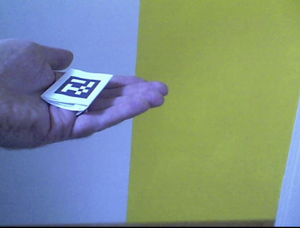
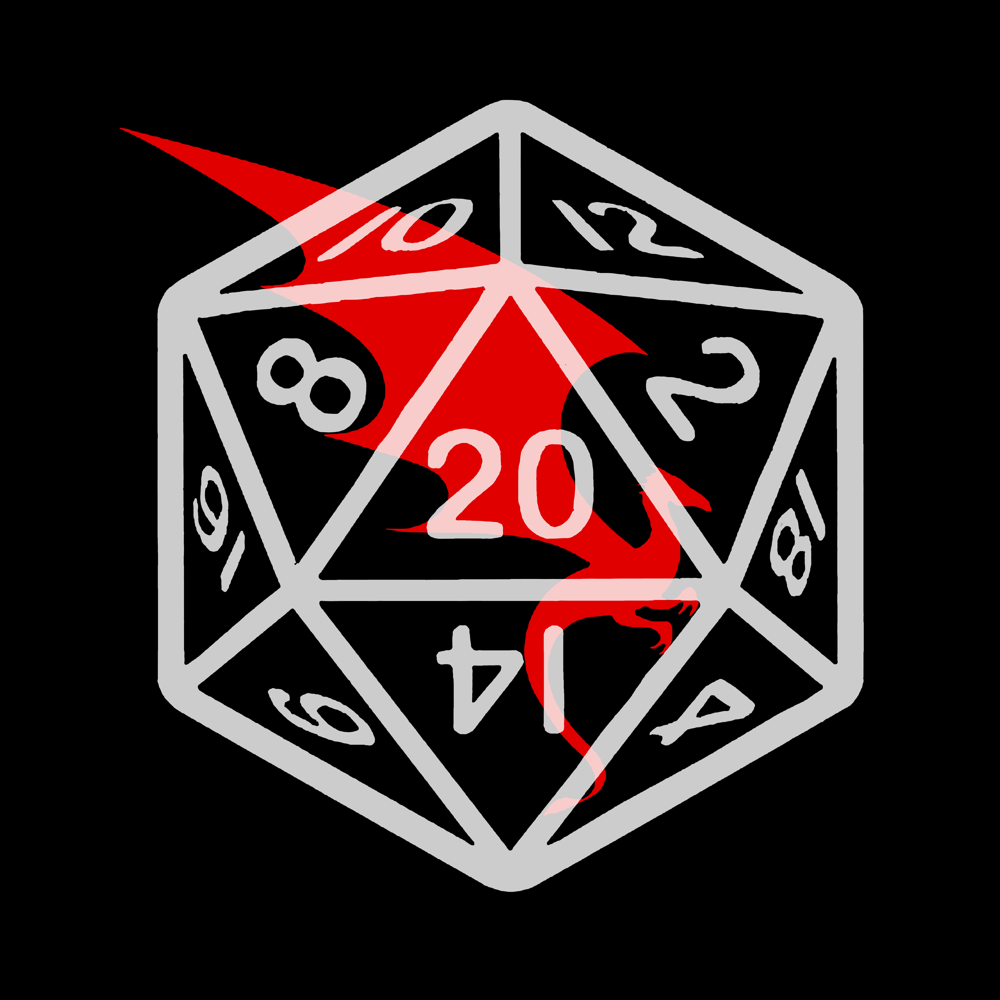

image and video/webcam capture + Final result

OpenCV source (copy of capture) and feedback (dstcv1 and dstcv2)
extracted quad images
Matrix marker
NaN
NaN
NaN
NaN
NaN
NaN
Three.js

Results (canvas2D, canvasBg3D)
texture